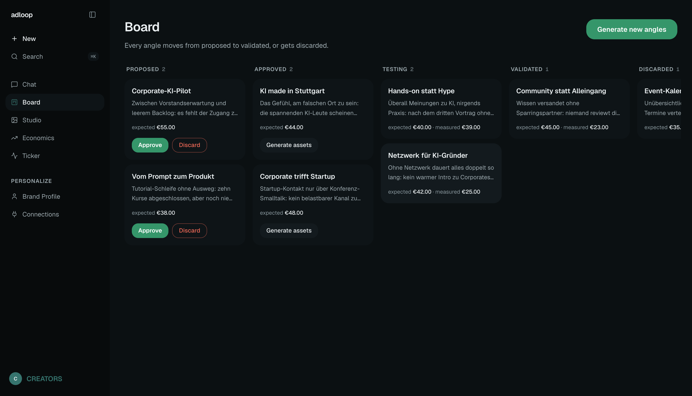
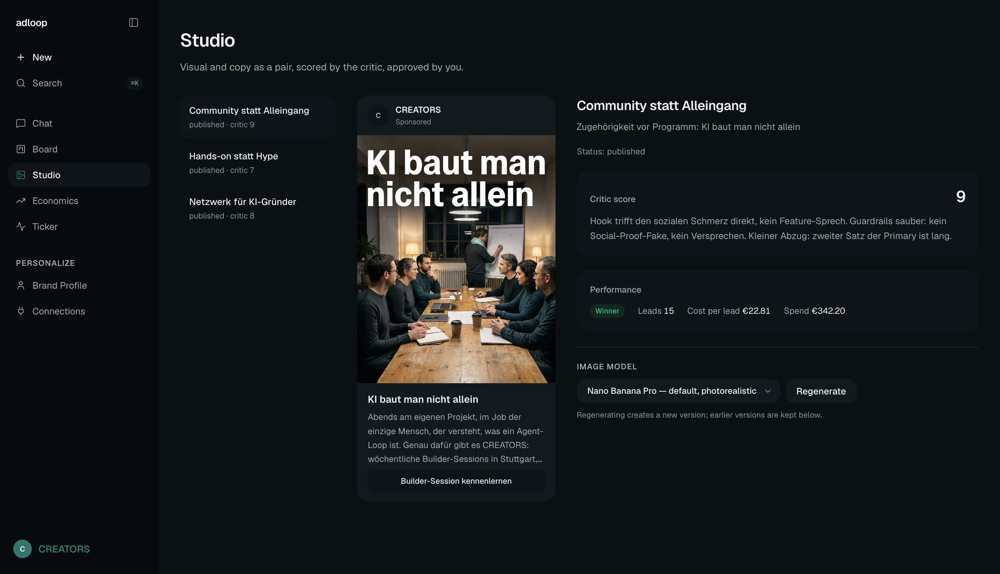
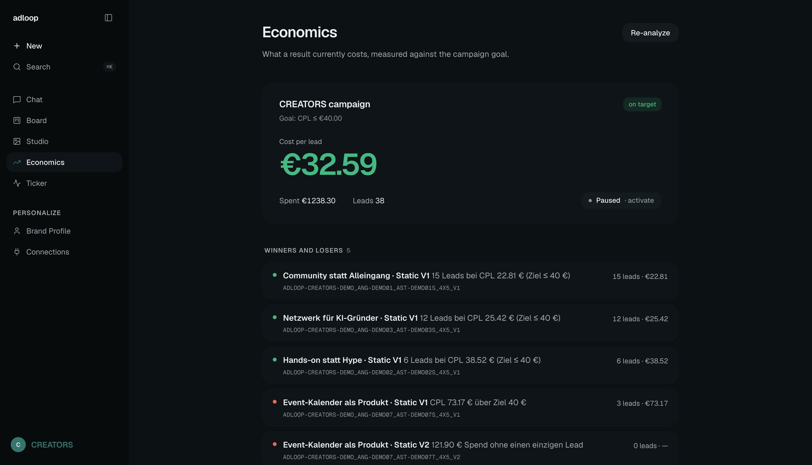

Creators, brands, startups — testing creatives is manual or agency-priced.
AI tools generate endless assets, but none feed performance data back into the next ad.
Creative fatigue eats every campaign within weeks.
We know firsthand — we're rebuilding our own company's customer acquisition from scratch.
The open-source agentic ads engine.
Plug in any company by URL. It researches, hypothesizes, creates, publishes real Meta ads — paused — and mines the results.
Every euro of ad spend makes the next one cheaper.



Real engine runs. Human approved. Demo data labeled as such.
loyft GmbH goes live with adloop on Monday — our own acquisition runs on it.
Open source as distribution — the engine is public, the learnings compound.
Hosted version for creators and D2C brands next.
The tool layer is commoditized — Meta ships it themselves. We build the judgment layer on top.
Linus — founder, loyft GmbH. Builds agentic systems.
Lenn — concept & design.
Why now: Meta's algorithm shift made creative diversity the only lever left — exactly what a machine produces better than manual workflows.
The machine tests. The human decides. CAC goes down every week.
![[ screenshots/ads-manager.png ]](screenshots/ads-manager.png)